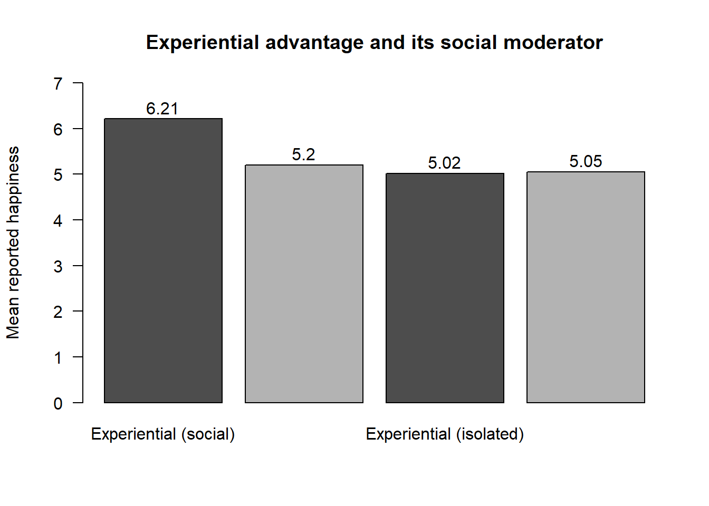

flowchart LR
E[Event or thought] --> A1{Goal relevant?}
A1 -- No --> N[No emotion]
A1 -- Yes --> A2{Goal congruent?}
A2 -- Yes --> P[Positive emotion<br/>joy, pride]
A2 -- No --> Ng[Negative emotion<br/>anger, fear, sadness]
P --> R[Behavioral readiness]
Ng --> R
59 Consumer Behavior Seminar
Consumer behavior is the scientific study of how people select, acquire, use, and dispose of goods, services, experiences, and ideas, and of the cognitive, affective, and social processes that drive those choices. As a field it sits at the intersection of cognitive and social psychology, behavioral economics, and marketing strategy, and it earns its place in a marketing-science curriculum for two reasons. Scientifically, it supplies the micro-foundations—the theories of judgment, emotion, motivation, and social influence—on which aggregate models of demand, pricing, and advertising ultimately rest. Commercially, the same theories are levers: a firm that understands why a left-digit price feels cheaper, why a green product reads as feminine, or why an experiential gift binds a relationship can design products, messages, and prices that move behavior.
This chapter is organized as a doctoral seminar rather than a survey. It does not attempt to enumerate every finding; it isolates the constructs, process models, and identification strategies that recur across the literature, and shows how ostensibly disparate phenomena—anchoring, motivated reasoning, persuasion knowledge, moral licensing—are instances of a small number of underlying mechanisms. The reader who finishes the chapter should be able to (i) state the field’s central constructs formally, (ii) read an experimental consumer paper and name its theory, its manipulated cause, its measured mechanism, and the threats to its inference, and (iii) connect the behavioral primitives here to the structural demand and brand models elsewhere in the book (Chapter 11).
A word on method frames the whole. Two paradigms structure the discipline, and their tension recurs throughout (Simonson et al. 2001). Behavioral decision theory (BDT), descended from the judgment-and-decision-making program of Kahneman and Tversky, models the decision—the determinants of choice—using stimulus-based tasks and process traces (information acquisition, response time, verbal protocols). Social cognition models the response hierarchy—how judgments and attitudes form and are stored—using memory-based tasks and cognitive-response measures. Both lean on mediation and path analysis to argue process, and both sit within a broadly positivist epistemology that privileges causation, in contrast to the interpretivist tradition that privileges meaning. Table 59.1 contrasts the two dominant positivist paradigms; the distinction matters because it dictates what counts as evidence for a mechanism.
| Dimension | Behavioral decision theory | Social cognition |
|---|---|---|
| Underlying model | Decision model (determinants of choice) | Response-hierarchy model (how judgments and attitudes form) |
| Typical task | Stimulus-based (options present at judgment) | Memory-based (judgment retrieved/constructed from memory) |
| Core measures | Information acquisition, verbal protocols, response time | Cognitive responses (thought listing) |
| Canonical question | Which option is chosen and why | How an attitude is built and stored |
59.1 Semester arc
A consumer-behavior doctoral seminar is, at its core, an apprenticeship in psychological theory applied to consumption and in the experimental craft used to test it. The arc therefore moves on two tracks at once. Substantively, it begins with the architecture of the mind—how consumers attend to, encode, and process information; how they form attitudes; and how they make choices—and then layers on the forces that bend that architecture: heuristics and biases, affect and emotion, motivation and goals, self-control, the self and identity, and finally the social and cultural context in which all consumption is embedded. Methodologically, the seminar runs a parallel spine: from the logic of theory-driven experimentation and process evidence (mediation and moderation), through the credibility revolution (the replication crisis, pre-registration, and the shift toward more robust designs), and out to the frontier where lab experiments meet field data, large behavioral datasets, and consumer–technology interaction.
The intellectual logic is cumulative and dialectical. Week 1 establishes consumer research as a distinct discipline poised between psychology and economics, and frames the recurring tension already named above: the rational-economic model of the consumer versus the psychological-constructive model in which preferences are built on the spot, context-dependent, and shaped by affect and identity. Each subsequent module refines or challenges that opening tension. Information processing and dual-process models (Weeks 2–3) explain how judgments are formed; behavioral decision theory and prospect theory (Weeks 4–5) show how systematically they depart from normative benchmarks; affect, motivation, and self-control (Weeks 6–8) supply the drivers behind those departures; the self, identity, and social and cultural influence (Weeks 9–11) embed the individual consumer in a web of meaning and other people; and the closing modules (Weeks 12–14) turn to consumer well-being, the methodological reckoning of the open-science era, and the technological frontier of AI, algorithms, and robots that is reshaping what “a consumer decision” even is. The seminar is method-forward as well as theory-forward: students should leave able to read a behavioral paper critically, identify its theoretical contribution and its process account, evaluate the cleanliness of its experimental identification, and design a study that extends it.
59.2 Weekly modules
The thirteen-plus-one modules below are the backbone of the seminar. Each lists the topic, sub-topics, methods and skills emphasized, key readings, and the central debate. Readings are tagged [F] for foundational classic (canon every CB student must know, mostly pre-2010) or [R] for recent or frontier work (roughly the last decade). DOIs are reproduced verbatim from the verified syllabus; books and unverified entries are flagged accordingly. The thematic deep-dives that follow this section (from What Counts as a Contribution onward) develop several of these modules in expository detail with formal notation and a runnable example.
59.2.1 Week 1 — Foundations: What Is Consumer Research? Rational vs. Constructive Consumers
Topic: the identity of consumer behavior as a field and its foundational tension between the normative, utility-maximizing consumer and the descriptive, constructive consumer.
Subtopics: consumer behavior at the intersection of psychology, economics, and marketing; the normative versus descriptive consumer; preference construction; levels of explanation.
Methods: reading a behavioral paper for its theoretical claim and contribution; the normative-versus-descriptive distinction; what counts as “a consumer behavior contribution.”
Key readings
- [F] Bettman, James R., Mary Frances Luce, and John W. Payne (1998), “Constructive Consumer Choice Processes,” Journal of Consumer Research, 25(3), 187–217. doi:10.1086/209535. Canonical: the field’s manifesto for the view that consumers build preferences on the spot using context-sensitive, effort–accuracy-trading strategies rather than reading off stable utilities.
- [F] Simonson, Itamar (1989), “Choice Based on Reasons: The Case of Attraction and Compromise Effects,” Journal of Consumer Research, 16(2), 158–174. doi:10.1086/209205. Canonical: the foundational demonstration that adding a third option shifts choice shares, establishing context-dependent preference as the norm.
- [F] Simonson, Itamar, and Amos Tversky (1992), “Choice in Context: Tradeoff Contrast and Extremeness Aversion,” Journal of Marketing Research, 29(3), 281–295. doi:10.1177/002224379202900301. Canonical: generalizes context effects into tradeoff contrast and extremeness aversion, the most-cited bridge from psychology to assortment and line design.
Debate: Are preferences revealed (stable, pre-existing) or constructed (built in the moment)? Is consumer behavior an application of psychology or a theory-generating discipline in its own right?
59.2.2 Week 2 — Information Processing, Attention, Memory, and Categorization
Topic: the consumer as information processor and the cognitive machinery of attention, memory, and categorization.
Subtopics: memory and inference; how products and brands are categorized; typicality and its consequences for evaluation.
Methods: stimulus design; memory and recall measures; coding and content analysis with intercoder reliability; manipulating involvement and elaboration.
Key readings
- [F] Loken, Barbara, and James Ward (1990), “Alternative Approaches to Understanding the Determinants of Typicality,” Journal of Consumer Research, 17(2), 111–126. doi:10.1086/208542. Canonical: the reference treatment of how consumers categorize products and why typicality governs evaluation and inference.
- [F] Petty, Richard E., John T. Cacioppo, and David Schumann (1983), “Central and Peripheral Routes to Advertising Effectiveness: The Moderating Role of Involvement,” Journal of Consumer Research, 10(2), 135–146. doi:10.1086/208954. Canonical: imports the Elaboration Likelihood Model into consumer research; the canonical dual-route account of how involvement changes what information persuades.
- [F] Kolbe, Richard H., and Melissa S. Burnett (1991), “Content-Analysis Research: An Examination of Applications with Directives for Improving Research Reliability and Objectivity,” Journal of Consumer Research, 18(2), 243–250. doi:10.1086/209256. Canonical: a methods anchor for coding stimulus content reliably when cognition is paired with measurement of message content.
Debate: Is persuasion one process with two routes (ELM) or a continuum? How much of “judgment” is online versus memory-based?
59.2.3 Week 3 — Attitudes, Persuasion, and Dual-Process Theories
Topic: attitude formation and change and the dual-process and dual-systems accounts of how evaluations arise.
Subtopics: affect versus cognition in evaluation; argument quality versus peripheral cues; the interplay of feeling and deliberation.
Methods: affect manipulations; cognitive-load designs; distinguishing dual-process from single-process explanations; process-dissociation logic.
Key readings
- [F] Shiv, Baba, and Alexander Fedorikhin (1999), “Heart and Mind in Conflict: The Interplay of Affect and Cognition in Consumer Decision Making,” Journal of Consumer Research, 26(3), 278–292. doi:10.1086/209563. Canonical: the seminal consumer-behavior operationalization of the dual-system view—affect wins under cognitive load, deliberation wins under capacity.
- [F] Petty, Richard E., John T. Cacioppo, and David Schumann (1983), “Central and Peripheral Routes to Advertising Effectiveness,” Journal of Consumer Research, 10(2), 135–146. doi:10.1086/208954. Canonical: carried from Week 2 as the dual-process anchor.
- [F] Pham, Michel Tuan (1998), “Representativeness, Relevance, and the Use of Feelings in Decision Making,” Journal of Consumer Research, 25(2), 144–159. doi:10.1086/209532. Canonical: specifies when consumers rely on feelings as inputs to judgment—the feelings-as-information program applied to consumption.
Debate: Two systems or one? Is affect an input to evaluation, an output, or both? When are feelings used as information versus discounted?
59.2.4 Week 4 — Judgment under Uncertainty: Heuristics, Biases, and Numerical Cognition
Topic: the heuristics-and-biases program and its application to price and numerical cognition.
Subtopics: anchoring, availability, representativeness; price encoding; the left-digit effect and its moderators.
Methods: within- versus between-subject bias demonstrations; numeric stimulus design; field validation of a lab effect.
Key readings
- [F] Tversky, Amos, and Daniel Kahneman (1974), “Judgment under Uncertainty: Heuristics and Biases,” Science, 185(4157), 1124–1131. doi:10.1126/science.185.4157.1124. Canonical: the founding statement of the tradition that underpins behavioral decision research in marketing.
- [F] Thomas, Manoj, and Vicki Morwitz (2005), “Penny Wise and Pound Foolish: The Left-Digit Effect in Price Cognition,” Journal of Consumer Research, 32(1), 54–64. doi:10.1086/429600. Canonical: the definitive demonstration that consumers encode prices by the left-most digit—a clean, replicable bias with direct pricing implications.
- [R] Sokolova, Tatiana, Satheesh Seenivasan, and Manoj Thomas (2020), “The Left-Digit Bias: When and Why Are Consumers Penny Wise and Pound Foolish?” Journal of Marketing Research, 57(4), 771–788. doi:10.1177/0022243720932532. Canonical (frontier): establishes the moderators and field generalizability of the left-digit effect, a model of replication-plus-extension.
Debate: Are heuristics evidence of irrationality or of ecologically rational, fast-and-frugal cognition? How much do biases survive market discipline and learning?
59.2.5 Week 5 — Behavioral Decision Theory: Prospect Theory, Framing, and Mental Accounting
Topic: prospect theory and the descriptive theory of valuation that anchors behavioral pricing.
Subtopics: loss aversion; reference dependence and the endowment effect; framing; mental accounting and transaction utility.
Methods: designing risky-choice and framing manipulations; eliciting WTA/WTP; reference-point manipulation; reading formal value-function notation.
Key readings
- [F] Kahneman, Daniel, and Amos Tversky (1979), “Prospect Theory: An Analysis of Decision under Risk,” Econometrica, 47(2), 263–291. doi:10.2307/1914185. Canonical: the cornerstone descriptive theory of choice under risk—value function, loss aversion, probability weighting.
- [F] Thaler, Richard (1985), “Mental Accounting and Consumer Choice,” Marketing Science, 4(3), 199–214. doi:10.1287/mksc.4.3.199. Canonical: introduces transaction utility and mental accounting to marketing—the bridge from prospect theory to everyday purchase decisions.
- [F] Kahneman, Daniel, Jack L. Knetsch, and Richard H. Thaler (1990), “Experimental Tests of the Endowment Effect and the Coase Theorem,” Journal of Political Economy, 98(6), 1325–1348. doi:10.1086/261737. Canonical: the experimental proof of loss aversion in exchange (the “mug” experiments), foundational for WTA/WTP gaps.
Debate: Is loss aversion a robust, near-universal regularity or context-bound (and partly a measurement artifact)? Do mental accounts describe cognition or merely fit behavior?
59.2.6 Week 6 — Affect and Emotion in Consumption
Topic: the role of affect, mood, and discrete emotion as inputs to consumer judgment.
Subtopics: mood-as-information; valence versus discrete emotions; the appraisal-tendency framework; incidental versus integral affect.
Methods: incidental-affect inductions; misattribution paradigms; measuring discrete emotions; separating integral from incidental affect.
Key readings
- [F] Schwarz, Norbert, and Gerald L. Clore (1983), “Mood, Misattribution, and Judgments of Well-Being: Informative and Directive Functions of Affective States,” Journal of Personality and Social Psychology, 45(3), 513–523. doi:10.1037/0022-3514.45.3.513. Canonical: the founding feelings-as-information and mood-misattribution paradigm imported throughout consumer affect research.
- [F] Lerner, Jennifer S., and Dacher Keltner (2000), “Beyond Valence: Toward a Model of Emotion-Specific Influences on Judgement and Choice,” Cognition & Emotion, 14(4), 473–493. doi:10.1080/026999300402763. Canonical: the appraisal-tendency framework establishing that specific emotions, not just valence, have distinct, predictable effects on judgment.
- [F] Shiv, Baba, and Alexander Fedorikhin (1999), “Heart and Mind in Conflict,” Journal of Consumer Research, 26(3), 278–292. doi:10.1086/209563. Canonical: carried from Week 3 as the affect-versus-cognition anchor.
Debate: Is affect organized by valence and arousal or by discrete, appraisal-specified emotions? When does emotion improve versus degrade decision quality?
59.2.7 Week 7 — Motivation, Goals, and Regulatory Focus
Topic: the motivational engine of consumption—how goals and regulatory orientation direct cognition and choice.
Subtopics: regulatory focus (promotion/prevention) and regulatory fit; goal activation, pursuit, and balancing; self-construal by motivation.
Methods: priming goals and self-construal; manipulating regulatory focus and fit; measuring goal commitment and progress.
Key readings
- [F] Higgins, E. Tory (1997), “Beyond Pleasure and Pain,” American Psychologist, 52(12), 1280–1300. doi:10.1037/0003-066x.52.12.1280. Canonical: the founding statement of regulatory focus theory that pervades consumer motivation and message-framing research.
- [F] Aaker, Jennifer L., and Angela Y. Lee (2001), “‘I’ Seek Pleasures and ‘We’ Avoid Pains: The Role of Self-Regulatory Goals in Information Processing and Persuasion,” Journal of Consumer Research, 28(1), 33–49. doi:10.1086/321946. Canonical: the canonical consumer demonstration that self-construal activates promotion/prevention goals that change which appeals persuade.
- [F] Fishbach, Ayelet, and Ravi Dhar (2005), “Goals as Excuses or Guides: The Liberating Effect of Perceived Goal Progress on Choice,” Journal of Consumer Research, 32(3), 370–377. doi:10.1086/497548. Canonical: the touchstone for goal-balancing and licensing—progress on a goal can release incongruent (indulgent) choice.
Debate: Do goals operate as guides (commitment, highlighting) or as excuses (licensing, balancing)? Is regulatory fit a value-from-fit effect or a fluency/affect artifact?
59.2.8 Week 8 — Self-Control, Intertemporal Choice, and Hedonic vs. Utilitarian Consumption
Topic: willpower, precommitment, and the special status of vice and virtue goods in consumer self-regulation.
Subtopics: ego depletion; precommitment and self-rationing; vice/virtue and justification; hedonic versus utilitarian goods.
Methods: depletion manipulations; intertemporal-choice and discounting measures; field self-control designs; classifying goods as hedonic versus utilitarian.
Key readings
- [F] Baumeister, Roy F., Ellen Bratslavsky, Mark Muraven, and Dianne M. Tice (1998), “Ego Depletion: Is the Active Self a Limited Resource?” Journal of Personality and Social Psychology, 74(5), 1252–1265. doi:10.1037/0022-3514.74.5.1252. Canonical: the founding “strength model” of self-control and a live case study in the replication debate (Week 13).
- [F] Wertenbroch, Klaus (1998), “Consumption Self-Control by Rationing Purchase Quantities of Virtue and Vice,” Marketing Science, 17(4), 317–337. doi:10.1287/mksc.17.4.317. Canonical: shows consumers strategically ration vice goods to control future consumption—self-control as a market behavior.
- [F] Ariely, Dan, and Klaus Wertenbroch (2002), “Procrastination, Deadlines, and Performance: Self-Control by Precommitment,” Psychological Science, 13(3), 219–224. doi:10.1111/1467-9280.00441. Canonical: clean field-plus-lab evidence that people impose costly deadlines on themselves to combat present bias.
- [F] Dhar, Ravi, and Klaus Wertenbroch (2000), “Consumer Choice between Hedonic and Utilitarian Goods,” Journal of Marketing Research, 37(1), 60–71. doi:10.1509/jmkr.37.1.60.18718. Canonical: the standard reference for the hedonic/utilitarian distinction and its asymmetric governance of acquisition versus forfeiture.
Debate: Is self-control a depletable resource, a motivational/attentional shift, or a process artifact (the depletion replication controversy)? Do consumers need more justification to choose hedonic goods?
59.2.9 Week 9 — The Self, Identity, and Possessions
Topic: the self as the organizing construct behind identity-based and compensatory consumption.
Subtopics: the extended self; self-discrepancy and self-completion; identity-based consumption; compensatory consumption.
Methods: self-threat manipulations; measuring self-construal and self-discrepancy; symbolic self-completion designs.
Key readings
- [F] Belk, Russell W. (1988), “Possessions and the Extended Self,” Journal of Consumer Research, 15(2), 139–168. doi:10.1086/209154. Canonical: the field-defining statement that we are what we own; the root of identity, attachment, and meaning-of-possessions research.
- [F] Higgins, E. Tory (1987), “Self-Discrepancy: A Theory Relating Self and Affect,” Psychological Review, 94(3), 319–340. doi:10.1037/0033-295X.94.3.319. Canonical: supplies the actual/ideal/ought-self machinery behind the self-gaps that motivate consumption.
- [F] Rucker, Derek D., and Adam D. Galinsky (2008), “Desire to Acquire: Powerlessness and Compensatory Consumption,” Journal of Consumer Research, 35(2), 257–267. doi:10.1086/588569. Canonical: the foundational link from a threatened, low-power self-state to status-restoring consumption.
Debate: Do possessions constitute the self or merely signal it? Is compensatory consumption about the specific deficit (symbolic self-completion) or general affect repair?
59.2.11 Week 11 — Status, Signaling, and Conspicuous Consumption
Topic: behavioral economics meets identity in the display of status and the logic of conspicuous consumption.
Subtopics: status signaling and “loud versus quiet” luxury; need for status; signaling and counter-signaling.
Methods: signaling-game intuition for behavioral researchers; manipulating observability and conspicuousness; measuring need for status.
Key readings
- [F] Han, Young Jee, Joseph C. Nunes, and Xavier Drèze (2010), “Signaling Status with Luxury Goods: The Role of Brand Prominence,” Journal of Marketing, 74(4), 15–30. doi:10.1509/jmkg.74.4.015. Canonical: the Patricians/Parvenus/Poseurs/Proletarians taxonomy linking wealth, need for status, and preference for loud versus quiet brand prominence.
- [F] Berger, Jonah, and Chip Heath (2007), “Where Consumers Diverge from Others,” Journal of Consumer Research, 34(2), 121–134. doi:10.1086/519142. Canonical: carried as the identity-signaling anchor (Week 10).
- [F] Belk, Russell W. (1988), “Possessions and the Extended Self,” Journal of Consumer Research, 15(2), 139–168. doi:10.1086/209154. Canonical: the symbolic-consumption foundation underlying status display (Week 9).
Debate: Is conspicuous consumption about signaling to others (economic) or about constructing the self (psychological)? When does counter-signaling (“quiet luxury”) dominate?
59.2.12 Week 12 — Culture, Money, Time, and Consumer Well-Being
Topic: how culture frames the self and how money, time, and prosociality connect consumption to well-being.
Subtopics: cultural self-construal; money versus time as frames; experiential versus material purchases; prosocial spending and sustainable consumption.
Methods: cross-cultural design and self-construal priming; well-being and affect measurement; field interventions for behavior change.
Key readings
- [F] Markus, Hazel R., and Shinobu Kitayama (1991), “Culture and the Self: Implications for Cognition, Emotion, and Motivation,” Psychological Review, 98(2), 224–253. doi:10.1037/0033-295X.98.2.224. Canonical: the independent/interdependent self-construal framework that grounds essentially all cross-cultural consumer research.
- [F] Mogilner, Cassie, and Jennifer Aaker (2009), “The Time vs. Money Effect: Shifting Product Attitudes and Decisions through Personal Connection,” Journal of Consumer Research, 36(2), 277–291. doi:10.1086/597161. Canonical: priming time rather than money deepens personal connection and improves attitudes—a touchstone for well-being research.
- [F] Van Boven, Leaf, and Thomas Gilovich (2003), “To Do or to Have? That Is the Question,” Journal of Personality and Social Psychology, 85(6), 1193–1202. doi:10.1037/0022-3514.85.6.1193. Canonical: the founding experiential-over-material happiness result that launched the experiential-purchase literature.
- [F] Dunn, Elizabeth W., Lara B. Aknin, and Michael I. Norton (2008), “Spending Money on Others Promotes Happiness,” Science, 319(5870), 1687–1688. doi:10.1126/science.1150952. Canonical: the prosocial-spending result connecting consumption to well-being—widely taught and instructively part of the replication conversation.
- [R] White, Katherine, Rishad Habib, and David J. Hardisty (2019), “How to SHIFT Consumer Behaviors to be More Sustainable: A Literature Review and Guiding Framework,” Journal of Marketing, 83(3), 22–49. doi:10.1177/0022242919825649. Canonical (frontier): the integrative SHIFT framework that anchors sustainable-consumption and transformative-consumer-research work.
Debate: Are cultural differences in consumption traceable to a single self-construal dimension? Does money buy happiness when spent on experiences or others—and how robust are these effects?
59.2.13 Week 13 — Research Methods, Process Evidence, and the Credibility Revolution
Topic: how the field establishes process and the methodological reckoning of the open-science era.
Subtopics: mediation versus moderation-of-process; the replication crisis; questionable research practices; pre-registration and open science.
Methods: designing moderation-of-process studies; bootstrapped indirect effects (PROCESS); power analysis; the pre-registration and open-science workflow; reading a paper for p-hacking risk.
Key readings
- [F] Spencer, Steven J., Mark P. Zanna, and Geoffrey T. Fong (2005), “Establishing a Causal Chain: Why Experiments Are Often More Effective Than Mediational Analyses in Examining Psychological Processes,” Journal of Personality and Social Psychology, 89(6), 845–851. doi:10.1037/0022-3514.89.6.845. Canonical: the standard argument for experimentally manipulating the mediator rather than relying on statistical mediation alone.
- [F] Zhao, Xinshu, John G. Lynch Jr., and Qimei Chen (2010), “Reconsidering Baron and Kenny: Myths and Truths about Mediation Analysis,” Journal of Consumer Research, 37(2), 197–206. doi:10.1086/651257. Canonical: the most-cited mediation-methods reference in consumer research; reframes mediation around the indirect effect and bootstrapping.
- [F] Simmons, Joseph P., Leif D. Nelson, and Uri Simonsohn (2011), “False-Positive Psychology: Undisclosed Flexibility in Data Collection and Analysis Allows Presenting Anything as Significant,” Psychological Science, 22(11), 1359–1366. doi:10.1177/0956797611417632. Canonical: the paper that named “researcher degrees of freedom” and catalyzed pre-registration and disclosure norms.
- [R] Open Science Collaboration (2015), “Estimating the Reproducibility of Psychological Science,” Science, 349(6251), aac4716. doi:10.1126/science.aac4716. Canonical: the large-scale replication project that quantified the crisis and reset methodological expectations.
Debate: Statistical mediation versus experimental causal-chain evidence—which licenses process claims? How should the field weigh significance, effect size, and replicability after 2011 and 2015?
59.2.14 Week 14 — The Frontier: Consumers, AI, Algorithms, and Automated Agents
Topic: how AI, algorithms, and robots are reshaping the locus and unit of consumer decision-making.
Subtopics: algorithm aversion and appreciation; responses to AI and humanoid robots; uniqueness neglect and task objectivity; the changing locus of “decision.”
Methods: designing human-versus-algorithm comparison studies; measuring trust and adoption; integrating process measures (including neural and physiological) with choice; treating generative-AI agents as decision aids and as consumers.
Key readings
- [R] Longoni, Chiara, Andrea Bonezzi, and Carey K. Morewedge (2019), “Resistance to Medical Artificial Intelligence,” Journal of Consumer Research, 46(4), 629–650. doi:10.1093/jcr/ucz013. Canonical (frontier): identifies uniqueness neglect as the driver of reluctance to use AI in high-stakes health decisions.
- [R] Castelo, Noah, Maarten W. Bos, and Donald R. Lehmann (2019), “Task-Dependent Algorithm Aversion,” Journal of Marketing Research, 56(5), 809–825. doi:10.1177/0022243719851788. Canonical (frontier): shows algorithm aversion is task-dependent (stronger for subjective tasks) and that perceived objectivity is malleable.
- [R] Mende, Martin, Maura L. Scott, Jenny van Doorn, Dhruv Grewal, and Ilana Shanks (2019), “Service Robots Rising: How Humanoid Robots Influence Service Experiences and Elicit Compensatory Consumer Responses,” Journal of Marketing Research, 56(4), 535–556. doi:10.1177/0022243718822827. Canonical (frontier): links humanoid service robots to discomfort and compensatory consumption, connecting the AI frontier back to the self/identity core.
- [R] Karmarkar, Uma R., Baba Shiv, and Brian Knutson (2015), “Cost Conscious? The Neural and Behavioral Impact of Price Primacy on Decision Making,” Journal of Marketing Research, 52(4), 467–481. doi:10.1509/jmr.13.0488. Canonical (frontier method): a neuromarketing exemplar showing how information sequencing reshapes the neural computation of value.
Debate: Do consumers categorically avoid algorithms, or is aversion task- and framing-contingent (and sometimes appreciation)? As AI agents transact on consumers’ behalf, what is the unit of “consumer behavior”?
59.2.15 Optional swap-in modules
Programs vary; each of the following is supported by a verified anchor and can be substituted for, or added to, the core fourteen.
- Scarcity and decision-making under constraint — Shah, Anuj K., Sendhil Mullainathan, and Eldar Shafir (2012), “Some Consequences of Having Too Little,” Science, 338(6107), 682–685. doi:10.1126/science.1222426. [R]
- Choice architecture and choice overload — Iyengar, Sheena S., and Mark R. Lepper (2000), “When Choice Is Demotivating: Can One Desire Too Much of a Good Thing?” Journal of Personality and Social Psychology, 79(6), 995–1006. doi:10.1037/0022-3514.79.6.995. [F]
- Ownership, access, and the sharing economy — Bardhi, Fleura, and Giana M. Eckhardt (2012), “Access-Based Consumption: The Case of Car Sharing,” Journal of Consumer Research, 39(4), 881–898. doi:10.1086/666376 [R]; and Bardhi, Fleura, and Giana M. Eckhardt (2017), “Liquid Consumption,” Journal of Consumer Research, 44(3), 582–597. doi:10.1093/jcr/ucx050. [R]
59.3 Foundational vs. frontier at a glance
Foundational classics [F] — the canon every CB student must know, mostly pre-2010:
- Bettman, Luce & Payne 1998; Simonson 1989; Simonson & Tversky 1992 (Week 1)
- Loken & Ward 1990; Petty, Cacioppo & Schumann 1983; Kolbe & Burnett 1991 (Week 2)
- Shiv & Fedorikhin 1999; Pham 1998 (Week 3)
- Tversky & Kahneman 1974; Thomas & Morwitz 2005 (Week 4)
- Kahneman & Tversky 1979; Thaler 1985; Kahneman, Knetsch & Thaler 1990 (Week 5)
- Schwarz & Clore 1983; Lerner & Keltner 2000 (Week 6)
- Higgins 1997; Aaker & Lee 2001; Fishbach & Dhar 2005 (Week 7)
- Baumeister et al. 1998; Wertenbroch 1998; Ariely & Wertenbroch 2002; Dhar & Wertenbroch 2000 (Week 8)
- Belk 1988; Higgins 1987; Rucker & Galinsky 2008 (Week 9)
- Schultz et al. 2007; Berger & Heath 2007 (Week 10)
- Han, Nunes & Drèze 2010 (Week 11)
- Markus & Kitayama 1991; Mogilner & Aaker 2009; Van Boven & Gilovich 2003; Dunn, Aknin & Norton 2008 (Week 12)
- Spencer, Zanna & Fong 2005; Zhao, Lynch & Chen 2010; Simmons, Nelson & Simonsohn 2011 (Week 13); Iyengar & Lepper 2000 (swap-in)
Frontier / recent [R] — roughly 2012–2020, the natural growth edge:
- Berger & Milkman 2012 — social transmission and virality
- Shah, Mullainathan & Shafir 2012 — scarcity
- Bardhi & Eckhardt 2012 and 2017 — access-based and liquid consumption
- Open Science Collaboration 2015 — reproducibility
- Karmarkar, Shiv & Knutson 2015 — neuromarketing and value computation
- White, Habib & Hardisty 2019 — sustainable consumption (SHIFT)
- Longoni, Bonezzi & Morewedge 2019; Castelo, Bos & Lehmann 2019; Mende et al. 2019 — consumers, AI, and robots
- Sokolova, Seenivasan & Thomas 2020 — replication-plus-extension of the left-digit bias
59.4 How this chapter expands
The weekly skeleton is stable, but the frontier modules (Weeks 12–14 and the swap-ins) are where the chapter should grow. The curation rule, consistent with the rest of this research set, is to add a reading only after its DOI is Crossref-verified to a published version-of-record in a top behavioral outlet (JCR, JCP, JMR, JM, Marketing Science, or the flagship psychology journals these literatures draw on); to prefer review and meta-analytic anchors for new modules; and, when a classic effect is challenged, to cite both the original and the verified replication or meta-analysis so the debate is taught honestly. Concrete growth directions:
- Generative AI as decision agent and as “consumer.” The 2019 consumer–AI papers predate large language models. As verified work accrues on consumers’ trust in and delegation to LLM agents, AI as a co-creator of consumption experiences, and “synthetic respondents” as substitutes for human subjects, add a dedicated module and retire the Karmarkar neuromarketing entry to a methods footnote.
- Privacy, data, and algorithmic personalization from the consumer’s side. A module on perceived surveillance, the privacy paradox, the personalization–intrusiveness tradeoff, and “creepiness,” pairing behavioral work with the privacy/personalization strand in the quantitative chapters.
- The post-replication methods canon, kept current. As multi-lab replications, Registered Reports, many-analysts studies, and meta-analytic re-evaluations of marquee effects (ego depletion, prosocial spending, choice overload) reach version-of-record, fold the strongest into Week 13 so students debate specific contested effects.
- Affective and physiological frontier. Expand the affect module with verified work on emotional AI, interoception, and consumer neuroscience as the evidence base matures.
- Transformative consumer research and well-being. Sustainability (SHIFT), financial well-being, scarcity, dignity, and access/sharing are converging into a coherent well-being track; promote the Week 12 well-being material into its own module as generalizing reviews land.
- Identity in a platform and creator world. Update the identity and social-influence modules with verified work on online identity, self-presentation, parasocial and creator relationships, and digital possessions (the “Liquid Consumption” line is the seed).
59.5 What Counts as a Contribution
Before the substance, a note on the field’s epistemics, because doctoral readers must evaluate as well as absorb. A theory, in the field’s own definition, is “a statement of concepts and their interrelationships that shows how and/or why a phenomenon occurs” (Corley and Gioia 2011). Consumer research divides into theory development (creating or extending such statements) and theory application (deploying existing theory on a substantive problem), and a recurring critique is that application-heavy work can have limited managerial impact even when it is methodologically clean. A parallel cut separates theory-testing research, which adjudicates among competing explanations, from substantive, phenomenon-driven research, which documents and explains a managerially important regularity.
Janiszewski, Labroo, and Rucker (2016) organize knowledge production into deductive-conceptual moves and their integration into a cumulative “tree of knowledge.” The generative strategies are worth naming because they are what reviewers reward: bridging disciplines, challenging assumptions, introducing mediators and moderators, contrastive explanation (explaining why this outcome rather than a plausible alternative), and borrowing and blending constructs across domains. A contribution is then appraised on two axes: its quality (rigor and execution of method) and its benefit (originality, interestingness, and—most demanding—the degree to which it changes core beliefs). Much of what follows can be read as the field repeatedly executing these moves: importing appraisal theory from emotion science, introducing self-construal as a moderator of persuasion, or contrasting why services earn a positivity bias where products earn a negativity bias.
59.6 Judgment Under Uncertainty: The Heuristics-and-Biases Core
The intellectual bedrock of behavioral consumer research is the demonstration that people assess probabilities and predict values not by the calculus of probability but by a small set of heuristics—mental shortcuts that are usually serviceable but produce systematic, predictable error (A. Tversky and Kahneman 1974). The intuition is that the mind substitutes a hard question (“what is the probability that this person is an engineer?”) with an easy one (“how much does this person resemble my stereotype of an engineer?”), and the substitution leaves fingerprints.
Three heuristics carry most of the weight. Under representativeness, the probability that object \(A\) belongs to class \(B\) is judged by how much \(A\) resembles \(B\). Formally, the normative posterior obeys Bayes’s rule, \[ \Pr(B \mid A) = \frac{\Pr(A \mid B)\,\Pr(B)}{\Pr(A)}, \tag{59.1}\] but representativeness tracks only the likelihood term \(\Pr(A\mid B)\) and discards the base rate \(\Pr(B)\). The signature errors all follow from Equation 59.1 being truncated this way: base-rate neglect (priors are honored when no individuating evidence is present but ignored once worthless evidence appears), insensitivity to sample size (a small hospital is correctly more likely to record 60% male births on a given day, yet respondents judge large and small hospitals equally likely), misconceptions of chance—the gambler’s fallacy and a “law of small numbers” that treats short runs as representative of the generating process—and insensitivity to predictability, where forecasts track the favorableness of a description rather than its diagnostic information. Two further consequences are the illusion of validity (confidence rises with the internal consistency of an input pattern even as redundancy among inputs lowers accuracy) and misperception of regression (a flight instructor concludes that scolding works because a bad landing is, by regression to the mean, usually followed by a better one).
Under availability, frequency or probability is judged by the ease with which instances come to mind. Retrievability is inflated by familiarity, salience, and recency; by the searchability of a set (words beginning with r are easier to generate than words with r in the third position); by imaginability; and by illusory correlation, the overestimated co-occurrence of associatively linked events. Under anchoring and adjustment, estimates start from an initial value— supplied by the problem or by a partial computation—and adjust insufficiently toward the final answer. Anchoring explains overestimation of conjunctive events and underestimation of disjunctive events: the chain-like structure of conjunctions (“all components work”) anchors on the high component probabilities and overshoots, while the funnel-like structure of disjunctions (“at least one failure”) anchors low and undershoots, which is why project planners systematically underestimate completion times and risk assessors underestimate system failure. The same process produces overly narrow subjective confidence intervals, regardless of expertise.
These biases are not laboratory curiosities; they are the raw material of behavioral pricing and persuasion that the rest of the chapter exploits.
59.7 Prospect Theory and Behavioral Pricing
If heuristics describe how people estimate, prospect theory describes how they value. The neoclassical consumer maximizes a utility function over a goods vector \(\mathbf{z}=(z_1,\dots,z_n)\) at prices \(\mathbf{p}=(p_1,\dots,p_n)\) subject to a wealth constraint \(I\), \[ \max_{\mathbf{z}} \; U(\mathbf{z}) \quad \text{s.t.} \quad \sum_i p_i z_i \le I, \tag{59.2}\] with the familiar Lagrangian \(\mathcal{L}=U(\mathbf{z})-\lambda\!\left(\sum_i p_i z_i - I\right)\). This model is silent on framing: it treats wealth as fungible and prices as mere budget terms, ignoring that the same outcome described as a loss or a gain elicits different choices (A. Tversky and Kahneman 1981). Thaler’s theory of mental accounting repairs the model with three modifications (Thaler 1985): it replaces the utility of final states with a value function \(v(\cdot)\) defined over changes from a reference point; it replaces price with a reference price; and it relaxes fungibility, allowing money to be tagged by mental account.
The value function inherits prospect theory’s three properties. It is defined over gains and losses relative to a reference point (“people respond more to perceived changes than to absolute levels”); it is concave for gains and convex for losses (\(v''(x)<0\) for \(x>0\), \(v''(x)>0\) for \(x<0\)); and it is steeper for losses than for gains—loss aversion, \(v(x) < -v(-x)\) for \(x>0\). Whether a pair of outcomes \((x,y)\) is integrated as \(v(x+y)\) or segregated as \(v(x)+v(y)\) then has determinate welfare consequences. Table 59.2 collects the four cases that follow from the curvature of \(v\); they are the basis of practical “hedonic editing” prescriptions (segregate gains, integrate losses, cancel a small loss against a large gain, and find the silver lining in a small gain attached to a large loss).
| Case | Condition | Inequality | Preferred coding |
|---|---|---|---|
| Multiple gains | \(x>0,\,y>0\) | \(v(x)+v(y) > v(x+y)\) | Segregate |
| Multiple losses | \(x>0,\,y>0\) | \(v(-x)+v(-y) < v(-(x+y))\) | Integrate |
| Mixed (net gain) | \(x>y>0\) | \(v(x)+v(-y) < v(x-y)\) | Integrate (cancellation) |
| Mixed (net loss) | \(y>x>0\) | sign of \(v(x)+v(-y)-v(x-y)\) ambiguous | Segregate if \(v(x) > v(x-y)+v(-y)\) (“silver lining”) |
Mental accounting’s pricing contribution is to split the value of a purchase into two utilities. Let \(p\) be the actual price, \(\bar p\) the value-equivalent (the sum that would leave the consumer indifferent between receiving \(\bar p\) or the good as a gift), and \(p^{*}\) the reference price (the expected or “fair” price). Acquisition utility is the value of the good relative to its cost, coded as the integrated outcome \(v(\bar p, -p)\), so that paying for a good is not experienced as a pure loss. Transaction utility is the pleasure or pain of the deal itself, the reference outcome \(v(-p:-p^{*})\)—paying below the reference price is a gain, paying above it a loss—independent of the good’s intrinsic value. Total utility weights them, \[ w(z,p,p^{*}) = v(\bar p, -p) + \beta\, v(-p : -p^{*}), \tag{59.3}\] where \(\beta\) scales transaction utility; bargain hunters carry \(\beta>1\), buying goods they do not need because the deal is irresistible. Purchase occurs when value per dollar clears a threshold, \(w(z_i,p_i,p_i^{*})/p_i \ge k_{it}\), where the category- and period-specific cutoff \(k_{it}\) encodes local optimization: real consumers budget by mental account and time period rather than solving the single global program of Equation 59.2. The managerial implications are direct—raise the perceived reference price, obscure the reference price so transaction disutility is less salient, or bundle to shift the locus of comparison—and they prefigure the modern behavioral-pricing literature.
That literature has since sharpened the mechanisms. Reference prices themselves depend on the consistency and distinctiveness of the prices a consumer has encountered, which shape an internal standard against which new prices are judged (Lichtenstein and Bearden 1989). Context effects show that the choice set is part of the stimulus: an option’s attractiveness rises when the within-set tradeoffs favor it (tradeoff contrast) and when it occupies the intermediate position (extremeness aversion), so adding a dominated or extreme decoy predictably reshapes share (Simonson and Tversky 1992). And the left-digit bias—the gap between $4.00 and $2.99 feels larger than the gap between $4.01 and $3.00—turns out to be a cross-culturally robust artifact of how prices are encoded (Sokolova, Seenivasan, and Thomas 2020). The bias is stronger under stimulus-based evaluation, where focal and reference prices are seen together and the mind holds the perceptual string “2.99” without rounding, and weaker under memory-based evaluation, where at least one price is retrieved as a concept and rounded to the nearest accessible round number (2.99 stored as 3). The stimulus-versus-memory contrast of Table 59.1 thus reappears as a moderator of a specific pricing bias—an illustration of how the field’s paradigms operate as predictive theory rather than mere taxonomy. Comprehensive treatments of this mindful-judgment program appear in the review by E. U. Weber and Johnson (2009).
59.8 Affect, Emotion, and Mood
Early choice models treated affect as noise. The modern view treats it as information and computation. The foundational vocabulary distinguishes nested constructs (R. P. Bagozzi, Gopinath, and Nyer 1999): affect is the umbrella term for “a set of more specific mental processes including emotions, moods, and (possibly) attitudes,” while emotions are “mental states of readiness that arise from appraisals of events or one’s own thoughts.”
“Emotions are mental states of readiness that arise from appraisals of events or one’s own thoughts.” (R. P. Bagozzi, Gopinath, and Nyer 1999, 184)
Emotions are intense, short-lived, and intentional (about something); moods are longer-lasting, lower in intensity, and non-intentional; attitudes are evaluative judgments with both an affective and a cognitive component. The engine that generates emotion is appraisal theory: an event is evaluated on dimensions such as goal relevance (does this matter to me?) and goal congruence (does it help or hurt?), and the pattern of appraisals selects the specific emotion. Figure 59.1 sketches the appraisal-to-emotion pathway that organizes this literature.
Affect does work in judgment through the affect-as-information framework: people knowingly read their momentary feelings as data about a target, asking in effect “how do I feel about it?” (Pham et al. 2001). Those feelings can be integral (produced by the mental representation of the target itself) or incidental (a pre-existing or contextually induced mood mistakenly attributed to the target). The theory’s sharp prediction is that, for moderately complex and consciously accessible stimuli, consulting one’s feelings yields evaluations that are faster, more stable and homogeneous across individuals, and more predictive of the valence and volume of one’s thoughts than effortful reason-based assessment—but only for affect that is relatively automatic (innate or conditioned responses), not for affect that is itself the product of a controlled appraisal. Positive affect is not merely pleasant; it expands the menu of cognition, increasing flexibility, creativity, and efficiency in problem solving and raising helping, generosity, and interpersonal understanding (Isen 2001). Mood also transfers across product contexts in a way that depends on category match: within the same domain, exposure to a pleasant, improving sequence lowers satisfaction with a target (a contrast effect), whereas across domains the same pleasant context raises it (an assimilation effect) (Raghunathan and Irwin 2001).
59.9 Motivation, Goals, and Self-Regulation
Affect supplies valence; goals supply direction. The cleanest entry point is motivated reasoning: the demonstration that motivation does not bypass cognition but operates through it, biasing the beliefs and inferential strategies a person recruits (Kunda 1990). Motivation here is “any wish, desire, or preference that concerns the outcome of a given reasoning task,” and it comes in two flavors with opposite epistemic consequences. An accuracy goal mobilizes more cognitive effort and the most appropriate strategies—people reason harder when they are evaluated, expect to justify or publicize their judgments, or expect their judgments to affect others—yet effort alone neither removes bias nor guarantees correct reasoning. A directional goal recruits whichever beliefs and strategies are most likely to yield the desired conclusion, under an “illusion of objectivity”: people search memory for, or construct, accessible knowledge that supports what they already want to believe. Crucially, the directional bias is constrained—people must be able to construct a justification for the preferred conclusion—which is why motivated reasoning is selective rather than unbounded.
The architecture of goal pursuit decomposes the process into stages (Richard P. Bagozzi and Dholakia 1999). Goal setting answers “what goals can I pursue, and why?” and may be triggered externally (an opportunity appears) or internally (the consumer constructs a goal schema or chooses among self-generated alternatives), consciously or unconsciously. Goal striving is bridged to setting by intention, and the literature distinguishes the behavioral intention to reach an end state from the implementation intention to perform a specific instrumental act when a future contingency arises. Delayed intentions add a memory burden—prospective memory (remembering to act) and retrospective memory (remembering what to do and under what conditions). Goals are organized hierarchically, with subordinate, focal, and superordinate levels, as in Figure 59.2.
flowchart TD S[Superordinate goal<br/>'be healthy'] --> F[Focal goal<br/>'lose weight'] F --> Sub1[Subordinate goal<br/>'exercise'] F --> Sub2[Subordinate goal<br/>'eat fewer calories'] F -. intention .-> Act[Instrumental act]
Because consumers pursue multiple goals, the meaning a person assigns to a completed action governs what they do next (Fishbach and Dhar 2005). The same action—say, a gym session—can be read as evidence of goal progress (“I’ve made headway, I can relax”) or goal commitment (“this is who I am, I’ll keep going”). Read as progress, the action liberates and increases the likelihood of pursuing an incongruent goal (the post-workout dessert); read as commitment, it sustains the focal goal. This is why people who overestimate future progress switch prematurely to competing goals, and it formalizes the everyday phenomenon of goals serving as excuses as much as guides. Goal orientation also shapes the status quo: prevention-focused consumers prefer to preserve the status quo more strongly than promotion-focused consumers, an effect that is distinct from loss aversion (Chernev 2004). Counterintuitively, implemental planning for multiple goals can backfire—spelling out the steps makes the joint task feel harder, undermining commitment and success unless the execution is reframed (Dalton and Spiller 2012)—and perceived goal conflict inflates the feeling of time scarcity through stress and anxiety, which in turn raises consumers’ valuation of their time and their willingness to pay to save it (Etkin, Evangelidis, and Aaker 2015; Riediger and Freund 2004).
59.10 Persuasion and Attitude Change
Persuasion research asks how communications change what consumers think and do, and its organizing modern insight is that consumers are not passive recipients but naive theorists of persuasion itself. The Persuasion Knowledge Model (PKM) casts every episode as an interaction between a target (the audience) and an agent (the message’s perceived source), in which both parties carry knowledge— about psychological mediators, about marketers’ tactics, and about the effectiveness and appropriateness of those tactics—and people switch fluently between the two roles while their knowledge persists (Friestad and Wright 1994). The target’s accumulated theory licenses coping: once a tactic is recognized as a persuasion attempt with an ulterior motive, the target evaluates it on two dimensions, perceived effectiveness and perceived appropriateness, and adjusts response accordingly. Figure 59.3 renders the model.
flowchart LR
subgraph Agent
AK[Agent knowledge] --> Attempt[Persuasion attempt]
end
subgraph Target
PK[Persuasion knowledge]
TK[Topic knowledge]
AGK[Agent knowledge]
end
Attempt --> Cope[Coping / response]
PK --> Cope
TK --> Cope
AGK --> Cope
Cope --> Out[Attitude & behavior]
The PKM’s central empirical refinement specifies when persuasion knowledge activates (Campbell and Kirmani 2000). Inferring an ulterior motive proceeds in two stages: a characterization stage that is perceptual and automatic, and a correction stage that requires higher-order attributional processing. Because targets typically labor under more cognitive load than observers, they have less capacity for the correction stage. The prediction is conditional: under a high ulterior-motive cue, both cognitively busy and unbusy targets apply persuasion knowledge and discount the agent; under a low or ambiguous cue, only targets with spare capacity perform the correction, so cognitively busy targets fail to discount and judge the salesperson more favorably. Accessibility of the ulterior-motive concept—driven by expectations, strength of association, and the frequency and recency of activation—moderates the whole sequence.
Several strands extend the framework. A skepticism–identification model resolves the puzzle of how knowing the ad’s creator cuts both ways: knowledge of the creator triggers skepticism about competence but also identification with the source, and which dominates depends on cognitive resources, source similarity, and brand loyalty (Thompson and Malaviya 2013). Commitment and consistency can be enlisted with strikingly light touches: a purely symbolic commitment device—a lapel pin signaling a guest’s pledge—raises subsequent environmentally friendly behavior, because consumers prefer internal consistency with a signaled identity to the dissonance of betraying it, a signaling-theory account in which the desire to be seen as green outweighs the pull toward laziness (Baca-Motes et al. 2013). The broader persuasion-knowledge program also encompasses work on how persuasion attempts are resisted or accommodated (Ahluwalia 2000; Campbell, Mohr, and Verlegh 2013; Isaac and Grayson 2016). Underlying all of it is the dual-route architecture inherited from social psychology—the Elaboration Likelihood Model (Petty and Cacioppo 1979) and the Heuristic-Systematic Model (Chaiken 1980)—in which a message is processed centrally/systematically (scrutinizing arguments) or peripherally/heuristically (relying on cues), with the route determined by motivation and ability.
59.12 Interpersonal Perception and Consumer Lay Beliefs
Consumers are intuitive psychologists who carry lay theories—informal, often-unexamined beliefs about how the world works—and these theories steer inference. A first lesson is that the same valence of information is weighted differently across product types. For products, a negativity bias dominates: negative information about a product moves brand perceptions more than positive information of equal magnitude (Folkes and Patrick 2003; Herr, Kardes, and Kim 1991). For services, the sign flips to a positivity bias: a single positive encounter with a service provider licenses a favorable inference about the whole brand more than a negative encounter licenses an unfavorable one, an asymmetry plausibly rooted in the heterogeneity of service delivery and in consumers’ prior that a service encounter should be more positive than negative, so good experiences read as typical and bad ones as outliers (Fornell 2005). The bias is strongest for novices and is built from three belief sources—general perceptions of services, firm-specific beliefs, and occupation-specific beliefs—while alternative explanations such as subtyping (R. Weber and Crocker 1983) are ruled out.
Lay theories also encode cultural meaning onto products. Green consumption carries a femininity stereotype—held by men and women, users and observers alike—so men buy fewer environmentally friendly products to protect a masculine gender identity, an avoidance that exceeds what prosocial-trait differences (Lee and Holden 1999; Zelezny, Chua, and Aldrich 2000) can explain and that follows from self-concept being partly derived from group membership (Brough et al. 2016; Turner and Oakes 1986). Facial cues are read through similar theories: a broader smile signals more warmth but less competence, so promotion-focused consumers in low-risk contexts prefer a big smile while prevention-focused consumers in high-risk contexts prefer a restrained one, a pattern grounded in the stereotype content model of social judgment (Wang et al. 2016; Fiske et al. 2002). And a pervasive “healthy = expensive” intuition, processed heuristically in low-involvement food decisions, leads consumers to hold intuition-inconsistent health claims to a higher evidentiary standard than intuition-consistent ones (Haws, Reczek, and Sample 2017).
59.13 Culture and Consumer Behavior
Cultural psychology supplies a powerful moderator of nearly every process above: self-construal. In interdependent (broadly East Asian) cultures the self is defined through relationships and social context; in independent (broadly Western) cultures it is defined through internal attributes and uniqueness (Markus and Kitayama 1991). This single contrast cascades into cognition. East Asians reason holistically, attending to the whole field, attributing causality to context, and tolerating contradiction through dialectical reasoning; Westerners reason analytically, attending to focal objects, sorting them into categories, and applying formal logic (Nisbett et al. 2001). The difference is not hard-wired but is sustained by social organization and practice.
Self-construal does not so much overturn established models as recalibrate their inputs. Dual-process persuasion models, for instance, replicate across cultures—their structure is robust—but the diagnosticity of cues differs, so consensus information functions as a stronger heuristic cue in collectivist settings (Aaker and Maheswaran 1997). Cue diagnosticity, “the extent to which consumers perceive that inferences based on the information alone would be adequate to achieve their objective,” is the construct that ports the model across cultures while letting its predictions vary. Temporal preferences likewise diverge through a regulatory-focus lens: Westerners, framing delay as a promotion loss of early enjoyment, grow impatient and discount the future more, while Easterners, framing it as a prevention loss, are comparatively patient (Chen, Ng, and Rao 2005). The individualism–collectivism dimension is itself measured through validated self-construal instruments (Cousins 1989; Singelis 1994; Triandis 1989), and its behavioral correlates run deep: U.S. individualism shows up as competitive self-reliance and distance from in-groups, with idiocentric individuals reporting more loneliness even as allocentric individuals report richer social support (Triandis et al. 1988). Bicultural consumers, finally, exhibit the greatest cognitive flexibility, which makes them unusually receptive to paradox brands that deliberately combine contradictory associations (Rodas, John, and Torelli 2021), with brand values themselves anchored in Schwartz’s value structure (Schwartz 1992).
59.15 Consumer Well-Being and Food Decisions
A large applied literature studies how consumers judge what to eat, where lay theories and processing modes produce predictable distortions with public-health consequence. A foundational belief is the “unhealthy = tasty” intuition: portraying a food as unhealthy raises its inferred and actual taste, especially when hedonic cues are salient, and the effect holds even among consumers who explicitly deny the healthiness–tastiness tradeoff, suggesting an implicit compensatory belief that wholesomeness and pleasure trade off (Raghunathan, Naylor, and Hoyer 2006). The complementary “healthy = expensive” belief was treated above (Haws, Reczek, and Sample 2017). The closely related IKEA effect—the inflated valuation of self-made objects—shows the same self-relevance logic operating on effort rather than ingestion: labor breeds love, but only when the task is completed successfully; destroyed or abandoned creations earn no premium (Norton, Mochon, and Ariely 2012).
Calorie and quantity judgments are systematically biased by a type-before-quantity processing order. Consumers treat food type (healthy vs. unhealthy) as the primary dimension and quantity as secondary (Liu et al. 2019), which produces a split between two estimation modes (Woolley and Liu 2020). Under magnitude estimates (“very few” to “many” calories), which are sensitive only to type, a small portion of an unhealthy food can be judged to have more calories than a large portion of a healthy food. Under numeric estimates (a specific calorie count), which are sensitive to both type and quantity, the large healthy portion correctly registers more calories. Because healthiness is processed first, the two modes converge only when quantity is made primary or processed intuitively. These biases blunt policy levers. A price surcharge or an unhealthy label alone does little to curb demand for unhealthy food; only the combination works, and even then the effect is gendered—among men an unhealthy label can raise demand relative to the label-plus-surcharge condition (Shah et al. 2014). Consumers also chase financial value over nutrition: the any-size-same-price beverage promotion drives demand for larger sizes that persists even under calorie posting and even for diet drinks, confirming the pull is the perceived monetary deal rather than the calories, though graphic health interventions still dent the appeal (Haws et al. 2019). Loosely regulated “natural” claims exploit an inferential gap, raising product evaluations through consumers’ attribute inferences in the absence of any agreed definition (Berry, Burton, and Howlett 2017), and the quality of nutrition-information use depends jointly on consumer characteristics (familiarity, motivation) and stimulus characteristics (information format and content) (Moorman 1990). Related work extends these questions to algorithmic and default-driven food environments (Robitaille et al. 2021; Longoni, Bonezzi, and Morewedge 2019; VanEpps et al. 2021).
59.17 Experiential Consumption and Time
A robust regularity closes the chapter: experiences tend to make people happier than material goods of equal cost. A meta-analysis confirms the experiential advantage but refines its source—much of it may stem from relatedness rather than from happiness or willingness to pay per se, and it shrinks for negative, isolated, or low-socioeconomic-status experiences and when the experience delivers utilitarian benefits comparable to a material alternative (Weingarten and Goodman 2020). Several mechanisms have been proposed (Gilovich, Kumar, and Jampol 2015): experiences improve social relationships, are more central to identity, and are judged on their own terms rather than through the social comparisons that dog material possessions. A distinct construct, fun, is not the same as happiness; it arises from hedonic engagement plus a sense of liberation, facilitated by novelty, social connectedness, spontaneity, and spatial/temporal boundedness (Oh and Pham 2021).
The experiential frame reshapes downstream behavior. Gifts of experience strengthen the giver–recipient relationship more than material gifts—whether or not the two consume the experience together—because the bond is forged by the intensity of emotion during consumption rather than at the moment of receipt, marking experiential giving as an especially effective form of prosocial spending (Chan and Mogilner 2016). Consumers are also more willing to borrow for experiences than for material goods despite their shorter physical lifespan, because sensitivity to missing a scheduled consumption makes purchase timing feel urgent (Tully and Sharma 2017). Even information search splits by type: online, the internet blurs the classic search-versus-experience distinction by lowering information costs, and consumers search experiential goods with more depth (time per page) and less breadth (pages visited), free-ride less, and lean more on others’ reviews and interactive media (Huang, Lurie, and Mitra 2009). Yet trust in those reviews is itself type-dependent: consumers discount reviews of experiences relative to reviews of material goods, reasoning that an experience rating reflects idiosyncratic taste more than objective quality (Dai, Chan, and Mogilner 2019). A short simulation (Figure 59.4) makes the experiential advantage and its moderators concrete.
Code
set.seed(38)
n <- 400
# Latent relatedness benefit is larger, on average, for experiences.
relatedness_exp <- rnorm(n, mean = 1.0, sd = 0.6)
relatedness_mat <- rnorm(n, mean = 0.2, sd = 0.6)
# Happiness = baseline utility + weight * relatedness + noise.
w <- 1.2
happiness_exp <- 5 + w * relatedness_exp + rnorm(n, 0, 1)
happiness_mat <- 5 + w * relatedness_mat + rnorm(n, 0, 1)
# Counterfactual: isolate the purchase (set relatedness to zero) to show the
# advantage shrinking when the social channel is removed.
happiness_exp_iso <- 5 + rnorm(n, 0, 1)
happiness_mat_iso <- 5 + rnorm(n, 0, 1)
means <- c(
`Experiential (social)` = mean(happiness_exp),
`Material (social)` = mean(happiness_mat),
`Experiential (isolated)` = mean(happiness_exp_iso),
`Material (isolated)` = mean(happiness_mat_iso)
)
bp <- barplot(means, ylim = c(0, 7), las = 1, col = c("grey30", "grey70"),
ylab = "Mean reported happiness",
main = "Experiential advantage and its social moderator")
text(bp, means + 0.25, labels = round(means, 2))
The simulation is deliberately stylized, but it encodes the literature’s central claim and its boundary condition: the experiential advantage is real on average and attenuates once the relational channel that produces it is removed.
59.18 Key Takeaways
- Most behavioral consumer phenomena reduce to a few primitives: heuristic substitution of an easy question for a hard one (A. Tversky and Kahneman 1974), reference dependence and loss aversion (Thaler 1985), affect as information (Pham et al. 2001), and motivated, goal-directed cognition (Kunda 1990; Richard P. Bagozzi and Dholakia 1999).
- Consumers are intuitive theorists—of persuasion (Friestad and Wright 1994), of services versus products (Folkes and Patrick 2003), and of food (Raghunathan, Naylor, and Hoyer 2006)—and those lay theories, not just the stimulus, drive response.
- Self-construal is the field’s master moderator: it recalibrates persuasion, time preference, and judgment across cultures without overturning the underlying process models (Markus and Kitayama 1991; Nisbett et al. 2001).
- The stimulus-based versus memory-based distinction (Table 59.1) is not merely taxonomic; it predicts when biases such as the left-digit effect strengthen or weaken (Sokolova, Seenivasan, and Thomas 2020).
- Credible causal claims in this literature pair observational data with experiments that hold content fixed and manipulate the hypothesized mechanism—nowhere more necessary than in virality, where confounds abound (Berger and Milkman 2012; Vosoughi, Roy, and Aral 2018).
59.19 Further Reading
The judgment-and-decision-making foundations are surveyed in E. U. Weber and Johnson (2009); the emotion-and-affect vocabulary is laid out in R. P. Bagozzi, Gopinath, and Nyer (1999); the persuasion-knowledge program begins with Friestad and Wright (1994); and the experiential-consumption literature is synthesized in Gilovich, Kumar, and Jampol (2015) and Weingarten and Goodman (2020). Readers should connect these behavioral primitives to the aggregate brand and demand models developed in Chapter 11.
Aaker, Jennifer L., and Durairaj Maheswaran. 1997. “The Effect of Cultural Orientation on Persuasion.” Journal of Consumer Research 24 (3): 315–28. https://doi.org/10.1086/209513.
Ahluwalia, Rohini. 2000. “Examination of Psychological Processes Underlying Resistance to Persuasion.” Journal of Consumer Research 27 (2): 217–32. https://doi.org/10.1086/314321.
Argo, Jennifer J., Darren W. Dahl, and Rajesh V. Manchanda. 2005. “The Influence of a Mere Social Presence in a Retail Context.” Journal of Consumer Research 32 (2): 207–12. https://doi.org/10.1086/432230.
Baca-Motes, Katie, Amber Brown, Ayelet Gneezy, Elizabeth A. Keenan, and Leif D. Nelson. 2013. “Commitment and Behavior Change: Evidence from the Field.” Journal of Consumer Research 39 (5): 1070–84. https://doi.org/10.1086/667226.
Bagozzi, R. P., M. Gopinath, and P. U. Nyer. 1999. “The Role of Emotions in Marketing.” Journal of the Academy of Marketing Science 27 (2): 184–206. https://doi.org/10.1177/0092070399272005.
Bagozzi, Richard P., and Utpal Dholakia. 1999. “Goal Setting and Goal Striving in Consumer Behavior.” Journal of Marketing 63: 19. https://doi.org/10.2307/1252098.
Berger, Jonah, and Katherine L. Milkman. 2012. “What Makes Online Content Viral?” Journal of Marketing Research 49 (2): 192–205. https://doi.org/10.1509/jmr.10.0353.
Berry, Christopher, Scot Burton, and Elizabeth Howlett. 2017. “It’s Only Natural: The Mediating Impact of Consumers’ Attribute Inferences on the Relationships Between Product Claims, Perceived Product Healthfulness, and Purchase Intentions.” Journal of the Academy of Marketing Science 45 (5): 698–719. https://doi.org/10.1007/s11747-016-0511-8.
Brough, Aaron R., James E. B. Wilkie, Jingjing Ma, Mathew S. Isaac, and David Gal. 2016. “Is Eco-Friendly Unmanly? The Green-Feminine Stereotype and Its Effect on Sustainable Consumption.” Journal of Consumer Research 43 (4): 567–82. https://doi.org/10.1093/jcr/ucw044.
Campbell, Margaret C., and Amna Kirmani. 2000. “Consumers’ Use of Persuasion Knowledge: The Effects of Accessibility and Cognitive Capacity on Perceptions of an Influence Agent.” Journal of Consumer Research 27 (1): 69–83. https://doi.org/10.1086/314309.
Campbell, Margaret C., Gina S. Mohr, and Peeter W.J. Verlegh. 2013. “Can Disclosures Lead Consumers to Resist Covert Persuasion? The Important Roles of Disclosure Timing and Type of Response.” Journal of Consumer Psychology 23 (4): 483–95. https://doi.org/10.1016/j.jcps.2012.10.012.
Chaiken, Shelly. 1980. “Heuristic Versus Systematic Information Processing and the Use of Source Versus Message Cues in Persuasion.” Journal of Personality and Social Psychology 39 (5): 752–66. https://doi.org/10.1037/0022-3514.39.5.752.
Chan, Cindy, and Cassie Mogilner. 2016. “Experiential Gifts Foster Stronger Social Relationships Than Material Gifts.” Journal of Consumer Research, December, ucw067. https://doi.org/10.1093/jcr/ucw067.
Chen, Haipeng (Allan), Sharon Ng, and Akshay R. Rao. 2005. “Cultural Differences in Consumer Impatience.” Journal of Marketing Research 42 (3): 291–301. https://doi.org/10.1509/jmkr.2005.42.3.291.
Chernev, Alexander. 2004. “Goal Orientation and Consumer Preference for the Status Quo.” Journal of Consumer Research 31 (3): 557–65. https://doi.org/10.1086/425090.
Chernev, Alexander, and Sean Blair. 2015. “Doing Well by Doing Good: The Benevolent Halo of Corporate Social Responsibility.” Journal of Consumer Research 41 (6): 1412–25. https://doi.org/10.1086/680089.
Corley, Kevin G., and Dennis A. Gioia. 2011. “Building Theory about Theory Building: What Constitutes a Theoretical Contribution?” Academy of Management Review 36 (1): 12–32. https://doi.org/10.5465/amr.2009.0486.
Cousins, Steven D. 1989. “Culture and Self-Perception in Japan and the United States.” Journal of Personality and Social Psychology 56 (1): 124–31. https://doi.org/10.1037/0022-3514.56.1.124.
Dai, Hengchen, Cindy Chan, and Cassie Mogilner. 2019. “People Rely Less on Consumer Reviews for Experiential Than Material Purchases.” Edited by Darren W Dahl, Margaret C Campbell, and Cait Lamberton. Journal of Consumer Research 46 (6): 1052–75. https://doi.org/10.1093/jcr/ucz042.
Dalton, Amy N., and Stephen A. Spiller. 2012. “Too Much of a Good Thing: The Benefits of Implementation Intentions Depend on the Number of Goals.” Journal of Consumer Research 39 (3): 600–614. https://doi.org/10.1086/664500.
Etkin, Jordan, Ioannis Evangelidis, and Jennifer Aaker. 2015. “Pressed for Time? Goal Conflict Shapes How Time Is Perceived, Spent, and Valued.” Journal of Marketing Research 52 (3): 394–406. https://doi.org/10.1509/jmr.14.0130.
Feldman Barrett, Lisa, and James A. Russell. 1998. “Independence and Bipolarity in the Structure of Current Affect.” Journal of Personality and Social Psychology 74 (4): 967–84. https://doi.org/10.1037/0022-3514.74.4.967.
Fishbach, Ayelet, and Ravi Dhar. 2005. “Goals as Excuses or Guides: The Liberating Effect of Perceived Goal Progress on Choice.” Journal of Consumer Research 32 (3): 370–77. https://doi.org/10.1086/497548.
Fiske, Susan T., Amy J. C. Cuddy, Peter Glick, and Jun Xu. 2002. “A Model of (Often Mixed) Stereotype Content: Competence and Warmth Respectively Follow from Perceived Status and Competition.” Journal of Personality and Social Psychology 82 (6): 878–902. https://doi.org/10.1037/0022-3514.82.6.878.
Folkes, Valerie S., and Vanessa M. Patrick. 2003. “The Positivity Effect in Perceptions of Services: Seen One, Seen Them All?: Table 1.” Journal of Consumer Research 30 (1): 125–37. https://doi.org/10.1086/374693.
Fornell, Claes. 2005. “American Customer Satisfaction Index, 1996.” ICPSR - Interuniversity Consortium for Political; Social Research. https://doi.org/10.3886/ICPSR04208.
Friestad, Marian, and Peter Wright. 1994. “The Persuasion Knowledge Model: How People Cope with Persuasion Attempts.” Journal of Consumer Research 21 (1): 1. https://doi.org/10.1086/209380.
Gilovich, Thomas, Amit Kumar, and Lily Jampol. 2015. “A Wonderful Life: Experiential Consumption and the Pursuit of Happiness.” Journal of Consumer Psychology 25 (1): 152–65. https://doi.org/10.1016/j.jcps.2014.08.004.
Graham, Jesse, Jonathan Haidt, and Brian A. Nosek. 2009. “Liberals and Conservatives Rely on Different Sets of Moral Foundations.” Journal of Personality and Social Psychology 96 (5): 1029–46. https://doi.org/10.1037/a0015141.
Haidt, Jonathan. 2001. “The Emotional Dog and Its Rational Tail: A Social Intuitionist Approach to Moral Judgment.” Psychological Review 108 (4): 814–34. https://doi.org/10.1037/0033-295x.108.4.814.
Hamilton, Rebecca W. 2003. “Why Do People Suggest What They Do Not Want? Using Context Effects to Influence Others’ Choices.” Journal of Consumer Research 29 (4): 492–506. https://doi.org/10.1086/346245.
Haws, Kelly L., Peggy J. Liu, Steven K. Dallas, John Cawley, and Christina A. Roberto. 2019. “Any Size for a Dollar: The Effect of Any-Size-Same-Price Versus Standard Pricing on Beverage Size Choices.” Journal of Consumer Psychology 30 (2): 392–401. https://doi.org/10.1002/jcpy.1129.
Haws, Kelly L., Rebecca Walker Reczek, and Kevin L. Sample. 2017. “Healthy Diets Make Empty Wallets: The Healthy = Expensive Intuition.” Journal of Consumer Research, January, ucw078. https://doi.org/10.1093/jcr/ucw078.
Heilman, Kenneth. 1997. “The Neurobiology of Emotional Experience.” The Journal of Neuropsychiatry and Clinical Neurosciences 9 (3): 439–48. https://doi.org/10.1176/jnp.9.3.439.
Herr, Paul M., Frank R. Kardes, and John Kim. 1991. “Effects of Word-of-Mouth and Product-Attribute Information on Persuasion: An Accessibility-Diagnosticity Perspective.” Journal of Consumer Research 17 (4): 454. https://doi.org/10.1086/208570.
Huang, Peng, Nicholas H. Lurie, and Sabyasachi Mitra. 2009. “Searching for Experience on the Web: An Empirical Examination of Consumer Behavior for Search and Experience Goods.” Journal of Marketing 73 (2): 55–69. https://doi.org/10.1509/jmkg.73.2.55.
Isaac, Mathew S., and Kent Grayson. 2016. “Beyond Skepticism: Can Accessing Persuasion Knowledge Bolster Credibility?” Journal of Consumer Research, October, ucw063. https://doi.org/10.1093/jcr/ucw063.
Isen, Alice M. 2001. “An Influence of Positive Affect on Decision Making in Complex Situations: Theoretical Issues With Practical Implications.” Journal of Consumer Psychology 11 (2): 75–85. https://doi.org/10.1207/s15327663jcp1102_01.
Janiszewski, Chris, Aparna A. Labroo, and Derek D. Rucker. 2016. “A Tutorial in Consumer Research: Knowledge Creation and Knowledge Appreciation in Deductive-Conceptual Consumer Research.” Journal of Consumer Research 43 (2): 200–209. https://doi.org/10.1093/jcr/ucw023.
Kristofferson, Kirk, Katherine White, and John Peloza. 2013. “The Nature of Slacktivism: How the Social Observability of an Initial Act of Token Support Affects Subsequent Prosocial Action.” Journal of Consumer Research 40 (6): 1149–66. https://doi.org/10.1086/674137.
Kunda, Ziva. 1990. “The Case for Motivated Reasoning.” Psychological Bulletin 108 (3): 480–98. https://doi.org/10.1037/0033-2909.108.3.480.
Latan?, Bibb, and Sharon Wolf. 1981. “The Social Impact of Majorities and Minorities.” Psychological Review 88 (5): 438–53. https://doi.org/10.1037/0033-295x.88.5.438.
Lee, Julie Anne, and Stephen J. S. Holden. 1999. “Understanding the Determinants of Environmentally Conscious Behavior.” Psychology and Marketing 16 (5): 373–92. https://doi.org/10.1002/(sici)1520-6793(199908)16:5<373::aid-mar1>3.0.co;2-s.
Lichtenstein, Donald R., and William O. Bearden. 1989. “Contextual Influences on Perceptions of Merchant-Supplied Reference Prices.” Journal of Consumer Research 16 (1): 55. https://doi.org/10.1086/209193.
Liu, Peggy J., Kelly L. Haws, Karen Scherr, Joseph P. Redden, James R. Bettman, and Gavan J. Fitzsimons. 2019. “The Primacy of “What” over “How Much”: How Type and Quantity Shape Healthiness Perceptions of Food Portions.” Management Science 65 (7): 3353–81. https://doi.org/10.1287/mnsc.2018.3098.
Longoni, Chiara, Andrea Bonezzi, and Carey K Morewedge. 2019. “Resistance to Medical Artificial Intelligence.” Journal of Consumer Research 46 (4): 629–50. https://doi.org/10.1093/jcr/ucz013.
Lovett, Mitchell J., Renana Peres, and Ron Shachar. 2013. “On Brands and Word of Mouth.” Journal of Marketing Research 50 (4): 427–44. https://doi.org/10.1509/jmr.11.0458.
Markus, Hazel R., and Shinobu Kitayama. 1991. “Culture and the Self: Implications for Cognition, Emotion, and Motivation.” Psychological Review 98 (2): 224–53. https://doi.org/10.1037/0033-295x.98.2.224.
McFerran, Brent, Darren W. Dahl, Gavan J. Fitzsimons, and Andrea C. Morales. 2010. “I’ll Have What She’s Having: Effects of Social Influence and Body Type on the Food Choices of Others.” Journal of Consumer Research 36 (6): 915–29. https://doi.org/10.1086/644611.
Melumad, Shiri, and Michel Tuan Pham. 2020. “The Smartphone as a Pacifying Technology.” Edited by Darren W Dahl, Amna Kirmani, and Peter R Darke. Journal of Consumer Research 47 (2): 237–55. https://doi.org/10.1093/jcr/ucaa005.
Moore, Sarah G. 2012. “Some Things Are Better Left Unsaid: How Word of Mouth Influences the Storyteller.” Journal of Consumer Research 38 (6): 1140–54. https://doi.org/10.1086/661891.
Moorman, Christine. 1990. “The Effects of Stimulus and Consumer Characteristics on the Utilization of Nutrition Information.” Journal of Consumer Research 17 (3): 362. https://doi.org/10.1086/208563.
Moreau, C. Page, and Kelly B. Herd. 2010. “To Each His Own? How Comparisons with Others Influence Consumers’ Evaluations of Their Self-Designed Products.” Journal of Consumer Research 36 (5): 806–19. https://doi.org/10.1086/644612.
Naylor, Rebecca Walker, Cait Poynor Lamberton, and Patricia M. West. 2012. “Beyond the “Like” Button: The Impact of Mere Virtual Presence on Brand Evaluations and Purchase Intentions in Social Media Settings.” Journal of Marketing 76 (6): 105–20. https://doi.org/10.1509/jm.11.0105.
Nguyen, Peter, Xin (Shane) Wang, Xi Li, and June Cotte. 2020. “Reviewing Experts’ Restraint from Extremes and Its Impact on Service Providers.” Edited by J Jeffrey Inman and Andrew T Stephen. Journal of Consumer Research 47 (5): 654–74. https://doi.org/10.1093/jcr/ucaa037.
Nisbett, Richard E., Kaiping Peng, Incheol Choi, and Ara Norenzayan. 2001. “Culture and Systems of Thought: Holistic Versus Analytic Cognition.” Psychological Review 108 (2): 291–310. https://doi.org/10.1037/0033-295x.108.2.291.
Norton, Michael I, Daniel Mochon, and Dan Ariely. 2012. “The IKEA Effect: When Labor Leads to Love.” Journal of Consumer Psychology 22 (3): 453–60.
Oh, Travis Tae, and Michel Tuan Pham. 2021. “A Liberating-Engagement Theory of Consumer Fun.” Edited by Linda L Price and Tandy Chalmers Thomas. Journal of Consumer Research, August. https://doi.org/10.1093/jcr/ucab051.
Petty, Richard E., and John T. Cacioppo. 1979. “Issue Involvement Can Increase or Decrease Persuasion by Enhancing Message-Relevant Cognitive Responses.” Journal of Personality and Social Psychology 37 (10): 1915–26. https://doi.org/10.1037/0022-3514.37.10.1915.
Pham, Michel Tuan, Joel B. Cohen, John W. Pracejus, and G. David Hughes. 2001. “Affect Monitoring and the Primacy of Feelings in Judgment.” Journal of Consumer Research 28 (2): 167–88. https://doi.org/10.1086/322896.
Raghunathan, Rajagopal, and Julie R. Irwin. 2001. “Walking the Hedonic Product Treadmill: Default Contrast and Mood-Based Assimilation in Judgments of Predicted Happiness with a Target Product.” Journal of Consumer Research 28 (3): 355–68. https://doi.org/10.1086/323727.
Raghunathan, Rajagopal, Rebecca Walker Naylor, and Wayne D. Hoyer. 2006. “The Unhealthy = Tasty Intuition and Its Effects on Taste Inferences, Enjoyment, and Choice of Food Products.” Journal of Marketing 70 (4): 170–84. https://doi.org/10.1509/jmkg.70.4.170.
Riediger, Michaela, and Alexandra M. Freund. 2004. “Goal Pursuit Measure.” American Psychological Association (APA). https://doi.org/10.1037/t17542-000.
Robitaille, Nicole, Nina Mazar, Claire I. Tsai, Avery M. Haviv, and Elizabeth Hardy. 2021. “Increasing Organ Donor Registrations with Behavioral Interventions: A Field Experiment.” Journal of Marketing 85 (3): 168–83. https://doi.org/10.1177/0022242921990070.
Rodas, Maria A, Deborah Roedder John, and Carlos J Torelli. 2021. “Building Brands for the Emerging Bicultural Market: The Appeal of Paradox Brands.” Edited by Margaret C Campbell and Stefano Puntoni. Journal of Consumer Research, June. https://doi.org/10.1093/jcr/ucab037.
Sachdeva, Sonya, Rumen Iliev, and Douglas L. Medin. 2009. “Sinning Saints and Saintly Sinners.” Psychological Science 20 (4): 523–28. https://doi.org/10.1111/j.1467-9280.2009.02326.x.
Schwartz, Shalom H. 1992. “Universals in the Content and Structure of Values: Theoretical Advances and Empirical Tests in 20 Countries.” In, 1–65. Elsevier. https://doi.org/10.1016/s0065-2601(08)60281-6.
Shah, Avni M., James R. Bettman, Peter A. Ubel, Punam Anand Keller, and Julie A. Edell. 2014. “Surcharges Plus Unhealthy Labels Reduce Demand for Unhealthy Menu Items.” Journal of Marketing Research 51 (6): 773–89. https://doi.org/10.1509/jmr.13.0434.
Simonson, Itamar, Ziv Carmon, Ravi Dhar, Aimee Drolet, and Stephen M. Nowlis. 2001. “Consumer Research: In Search of Identity.” Annual Review of Psychology 52 (1): 249–75. https://doi.org/10.1146/annurev.psych.52.1.249.
Simonson, Itamar, Stephen Nowlis, and Katherine Lemon. 1993. “The Effect of Local Consideration Sets on Global Choice Between Lower Price and Higher Quality.” Marketing Science 12 (4): 357–77. https://doi.org/10.1287/mksc.12.4.357.
Simonson, Itamar, and Amos Tversky. 1992. “Choice in Context: Tradeoff Contrast and Extremeness Aversion.” Journal of Marketing Research 29 (3): 281. https://doi.org/10.2307/3172740.
Singelis, Theodore M. 1994. “The Measurement of Independent and Interdependent Self-Construals.” Personality and Social Psychology Bulletin 20 (5): 580–91. https://doi.org/10.1177/0146167294205014.
Sokolova, Tatiana, Satheesh Seenivasan, and Manoj Thomas. 2020. “The Left-Digit Bias: When and Why Are Consumers Penny Wise and Pound Foolish?” Journal of Marketing Research 57 (4): 771–88. https://doi.org/10.1177/0022243720932532.
Tangney, June Price, Jeff Stuewig, and Debra J. Mashek. 2007. “Moral Emotions and Moral Behavior.” Annual Review of Psychology 58 (1): 345–72. https://doi.org/10.1146/annurev.psych.56.091103.070145.
Tellis, Gerard J., Deborah J. MacInnis, Seshadri Tirunillai, and Yanwei Zhang. 2019. “What Drives Virality (Sharing) of Online Digital Content? The Critical Role of Information, Emotion, and Brand Prominence.” Journal of Marketing 83 (4): 1–20. https://doi.org/10.1177/0022242919841034.
Thaler, Richard. 1985. “Mental Accounting and Consumer Choice.” Marketing Science 4 (3): 199–214. https://doi.org/10.1287/mksc.4.3.199.
Thompson, Debora V., and Prashant Malaviya. 2013. “Consumer-Generated Ads: Does Awareness of Advertising Co-Creation Help or Hurt Persuasion?” Journal of Marketing 77 (3): 33–47. https://doi.org/10.1509/jm.11.0403.
Triandis, Harry C. 1989. “The Self and Social Behavior in Differing Cultural Contexts.” Psychological Review 96 (3): 506–20. https://doi.org/10.1037/0033-295x.96.3.506.
Triandis, Harry C., Robert Bontempo, Marcelo J. Villareal, Masaaki Asai, and Nydia Lucca. 1988. “Individualism and Collectivism: Cross-Cultural Perspectives on Self-Ingroup Relationships.” Journal of Personality and Social Psychology 54 (2): 323–38. https://doi.org/10.1037/0022-3514.54.2.323.
Tully, Stephanie M, and Eesha Sharma. 2017. “Context-Dependent Drivers of Discretionary Debt Decisions: Explaining Willingness to Borrow for Experiential Purchases.” Edited by Darren Dahl and Paul Herr. Journal of Consumer Research 44 (5): 960–73. https://doi.org/10.1093/jcr/ucx078.
Turner, John C., and Penelope J. Oakes. 1986. “The Significance of the Social Identity Concept for Social Psychology with Reference to Individualism, Interactionism and Social Influence.” British Journal of Social Psychology 25 (3): 237–52. https://doi.org/10.1111/j.2044-8309.1986.tb00732.x.
Tversky, A., and D. Kahneman. 1974. “Judgment Under Uncertainty: Heuristics and Biases.” Science 185 (4157): 1124–31. https://doi.org/10.1126/science.185.4157.1124.
Tversky, A, and D Kahneman. 1981. “The Framing of Decisions and the Psychology of Choice.” Science 211 (4481): 453–58. https://doi.org/10.1126/science.7455683.
VanEpps, Eric M., Andras Molnar, Julie S. Downs, and George Loewenstein. 2021. “Choosing the Light Meal: Real-Time Aggregation of Calorie Information Reduces Meal Calories.” Journal of Marketing Research 58 (5): 948–67. https://doi.org/10.1177/00222437211022367.
Vosoughi, Soroush, Deb Roy, and Sinan Aral. 2018. “The Spread of True and False News Online.” Science 359 (6380): 1146–51. https://doi.org/10.1126/science.aap9559.
Wang, Ze, Huifang Mao, Yexin Jessica Li, and Fan Liu. 2016. “Smile Big or Not? Effects of Smile Intensity on Perceptions of Warmth and Competence.” Journal of Consumer Research, October, ucw062. https://doi.org/10.1093/jcr/ucw062.
Weber, Elke U., and Eric J. Johnson. 2009. “Mindful Judgment and Decision Making.” Annual Review of Psychology 60 (1): 53–85. https://doi.org/10.1146/annurev.psych.60.110707.163633.
Weber, Rene?, and Jennifer Crocker. 1983. “Cognitive Processes in the Revision of Stereotypic Beliefs.” Journal of Personality and Social Psychology 45 (5): 961–77. https://doi.org/10.1037/0022-3514.45.5.961.
Weingarten, Evan, and Joseph K Goodman. 2020. “Re-Examining the Experiential Advantage in Consumption: A Meta-Analysis and Review.” Edited by J Jeffrey Inman and Andrew T Stephen. Journal of Consumer Research 47 (6): 855–77. https://doi.org/10.1093/jcr/ucaa047.
Wilson, Elizabeth J., and Daniel L. Sherrell. 1993. “Source Effects in Communication and Persuasion Research: A Meta-Analysis of Effect Size.” Journal of the Academy of Marketing Science 21 (2): 101–12. https://doi.org/10.1007/bf02894421.
Woolley, Kaitlin, and Peggy J. Liu. 2020. “How You Estimate Calories Matters: Calorie Estimation Reversals.” Edited by Amna Kirmani and Lauren Block. Journal of Consumer Research 48 (1): 147–68. https://doi.org/10.1093/jcr/ucaa059.
Yin, Bingqing (Miranda), Yexin Jessica Li, and Surendra Singh. 2020. “Coins Are Cold and Cards Are Caring: The Effect of Pregiving Incentives on Charity Perceptions, Relationship Norms, and Donation Behavior.” Journal of Marketing 84 (6): 57–73. https://doi.org/10.1177/0022242920931451.
Zelezny, Lynnette C., Poh-Pheng Chua, and Christina Aldrich. 2000. “New Ways of Thinking about Environmentalism: Elaborating on Gender Differences in Environmentalism.” Journal of Social Issues 56 (3): 443–57. https://doi.org/10.1111/0022-4537.00177.
59.11 Social Influence
Consumption is rarely solitary, and the mere presence or imagined judgment of others reshapes it. Social Impact Theory holds that the force others exert on an individual rises with three factors: their number (social size), their immediacy (proximity), and their strength (importance), with the impact of size growing sublinearly (Argo, Dahl, and Manchanda 2005; Latan? and Wolf 1981). The non-linearity is consequential: moving from zero to one co-present shopper raises positive emotions, but moving from one to three lowers them as crowding sets in, and physical proximity moderates how strongly social size affects emotion and brand selection.
Influence also runs through anchoring. In food consumption, people conform to a group’s average intake as an anchor, eating more when others are present—but the magnitude is moderated by the other’s body type (McFerran et al. 2010). Diners adjust down from the anchor set by an obese eater (an undesirable reference group) and up from a thin one; the effect operates regardless of whether the food is framed as healthy or unhealthy, and it is attenuated among consumers with low appearance self-esteem who have the processing resources to correct. Social comparison governs how consumers value their own creations: a self-designed product is judged against both comparable products and the skills of other designers, so the upward comparison to professional defaults depresses evaluations of one’s own design unless defensive processing, firm-provided guidance, public recognition, or a repair opportunity intervenes (Moreau and Herd 2010).
Strikingly, awareness of being influenced does not reliably immunize the consumer. When a choice set has been constructed to exploit context effects—an attraction decoy or a compromise option—people who believe a menu was built by a friend to sway them become more, not less, swayed, evaluating the target option more favorably, plausibly through homophily and trust (Hamilton 2003; Wilson and Sherrell 1993). Even sophisticated consumers struggle to disentangle the characteristics of a local choice set from the global market it is drawn from (Simonson, Nowlis, and Lemon 1993), so understanding that a context is manipulated is not the same as escaping it.